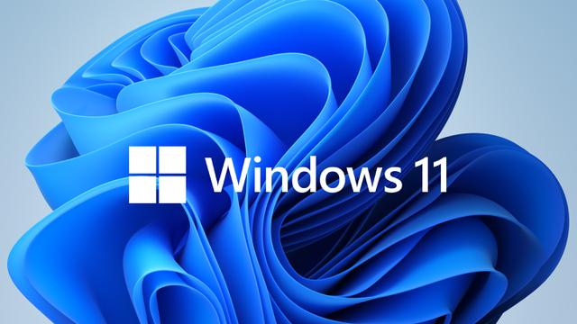

Windows 11 Akan Segera Hadir Secara Resmi!!Baca Persyaratannya

Sistem operasi terbaru windows 11 kabarnya akan tersedia dengan peningkatan gratis untuk PC windows 10 yang memenuhi syarat, atau pada perangkat baru yang disertakan dengan windows 11
Dikutip dari antaranews.com,pembaruan gratis ke windows 11 ini akan mulai diluncurkan pada 5 oktober.namun,windows 11 dinilai tidak memiliki banyak perubahan dibandingkan dengan versi sebelumnya.
Windows 11 juga dikabarkan akan tersedia secara bertahap.perangkat baru juga memenuhi syarat akan dapat menikmati versi terbaru ini terlebih dulu.Kemudian,windows 11 baru akan tersedia untuk lebih banyak perangkat dalam beberapa minggu atau bulan setelah perilisan pertamanya.
"Mengikuti pembelajaran luar biasa dari windows 10,kami ingin memastikan bahwa kami memberi anda pengalaman terbaik.kami berharap semua perangkat yang memenuhi syarat akan ditawarkan upgrade gratis ke windows 11 pada pertengahan 2022" ungkap Aaron Woodman,Manager umum pemasaran windows di microsoft.
Pihak microsoft juga mengabarkan bahwa tidak semua fitur dapat mengunduh versi terbaru windows 11 ini.microsoft akan membawa aplikasi android ke windows 11 dalam kemitraan dengan amazon dan intel.namun fitur ini tidak akan tersedia pada 5 oktober.
Persyaratan minimum
Microsoft mengklarifikasi persyaratan sistem minimum untuk windows 11.pengguna dapat menginstall windows 11 pada perangkat keras apapun menggunakan metode ISO,selama PC memiliki processor 64-bit 1Ghz dengan dua inti atau lebih,RAM 4gb,memiliki penyimpanan 64Gb,dan chip TPM 1,2.
Jika PC yang tidak dimiliki tidak sepenuhnya kompatible dengan windows 11,microsoft masi mendukung windows 10 hingga 14 oktober 2025 mendatang.
Sebelum beralih ke sistem operasi windows terkini,pengguna sebaiknya mengecek dulu perangkat yang dimiliki apakah mendukung untuk dipasangi windows 11.
Pengguna bisa memasang PC healt app untuk mengecek apakah spesifikasi komputer mendukung sistem operasi ini.
Jika PC healt menunjukan perangkat tidak mendukung,cek kembali BIOS dikomputer.Pastikan perangkat memiliki chip TPM 2.0 dan mengaktifkan secure Boot di BIOS.
Windows 11 menggunakan sistem firmware UEFI dan kemampuan secure boot. untuk layar dibutuhkan display high definition 720 Pixel diatas 9 inci secara diagonal dengan 8-Bit per warna.
Sejumlah fitur windows 11 juga membutuhkan akun Microsoft
Untuk dapat mengunduh windows 11 terbaru,pengguna dapat mengunduhnya melalui halaman resmi microsoft Explore Windows 11